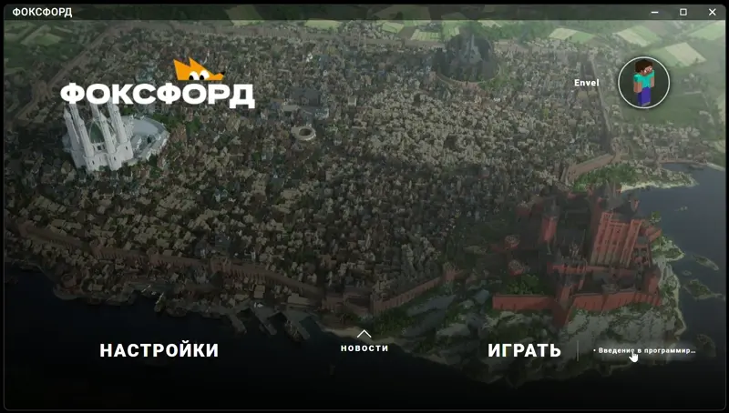

Как сменить курс (версию игры) в лаунчере?
Нажмите на название версии справа снизу и выберите нужный курс:

В чем разница между стабильной и новейшей версиями?
Мы предлагаем два подхода к обновлениям. Выбор зависит от того, что вам важнее: мгновенный доступ к новому или привычный старый интерфейс.
Плавающая (Новейшая)
Рекомендуемый выбор.
Это актуальная версия, в которую мгновенно попадают все наши новые идеи и наработки сразу после
тестирования.
Особенности:
- Оперативность: Получайте все улучшения и исправления сразу, не дожидаясь общего релиза.
- Актуальность: Самая современная версия лаунчера со всеми последними изменениями.
- Безопасность: Любые найденные ошибки и уязвимости закрываются в этой версии максимально быстро.
- Новые возможности: Весь новый функционал нашего сервиса появляется здесь в первую очередь.
Стабильная (Stable)
Классический вариант для тех, кто не любит любые изменения.
Особенности:
- Проверено временем: Версия, которая была признана «нормальной» несколько месяцев назад.
- Устаревание: Эта ветка может отставать от актуальной на 2-3 месяца и более.
- Известные проблемы: В ней могут оставаться баги и уязвимости, которые уже давно исправлены в новейшей версии.
- Массовость: Была установлена у большинства клиентов на протяжении долгого времени.
- Консерватизм: Подходит только тем, кто боится любых обновлений, даже если они полезны.
Что в итоге выбрать?
Мы рекомендуем использовать Плавающий релиз (Новейшую версию). Она быстрее,
безопаснее и содержит всё то, над чем мы работаем прямо сейчас.
Переходите на Стабильную только в том случае, если на новейшей версии у вас
возникают технические проблемы, мешающие работе.